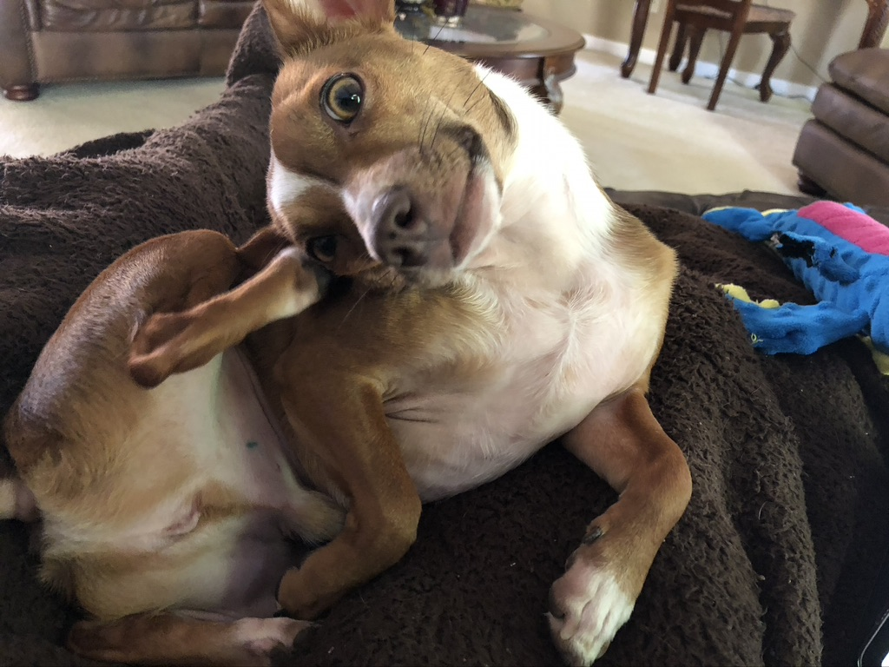

When searching for a new canine pet, many families research breeders to get a full bred puppy. Although there is nothing wrong with that, there are millions of dogs available for adoption. Here are some facts from the ASPCA:
Contrary to popular belief not all dogs in animal shelters and rescue organizations have behavioral problems. Many times, people have to leave their pet(s) behind due to a relocation. Some rescue organizations also train dogs to help them get adopted quicker. Here are some facts about dogs in general and dog adoption:
There are many animal shelters and dog rescues around the metro Atlanta area. I visited a few animal shelters before getting a dog. I went to the Atlanta Humane Society and got this little dude 3 years ago:  Click on the picture to check out the Atlanta Humane society website.